Префектура Киото · Окадзаки · кухня
Рётэй Rokusei: ужин в духе хэйанского двора, придуманный по старинным свиткам
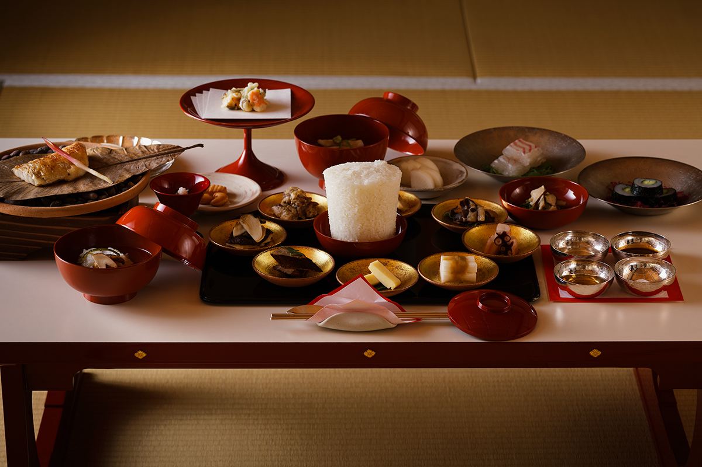
Третий хозяин старого киотского рётэя Rokusei восстановил праздничную трапезу аристократов эпохи Хэйан. Он сверялся со старинными сводами и советовался со специалистами, и получился ужин, в котором непривычно всё: посуда, порядок блюд и даже то, как их солить.
История
125 лет и поиск корней киотской кухни
В 2024 году рётэю Rokusei исполнилось 125 лет. Начинался он как лавка, развозившая готовые блюда на заказ, а прославил его прежний хозяин, большой любитель всего нового. В 1966 году он придумал «тэокэ-бэнто», обед в деревянной кадушке с ручкой.
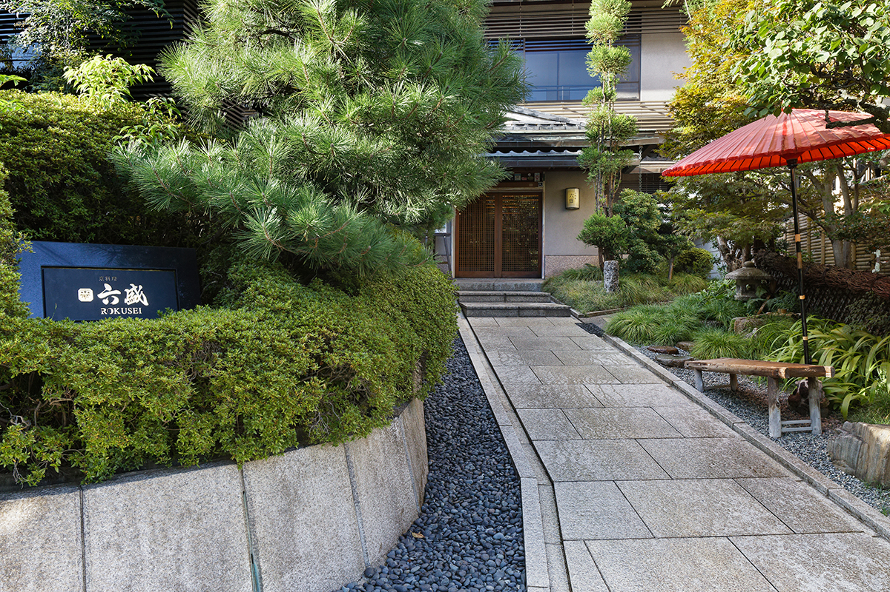
Тогда обед подавали лишь очень немногие рестораны. Хозяин увидел кадушки старой киотской мастерской и решил сделать из них коробку для бэнто. Новинка оказалась ещё и вкусной, о ней быстро заговорил весь город, и рётэю понадобилось помещение побольше. Так он переехал в квартал Окадзаки в районе Сакё. Из окон теперь видна вишнёвая аллея вдоль канала от озера Бива.
Хироюки Хориба вырос, глядя на работу отца, и тоже умеет создавать что-то из ничего. Около тридцати лет назад один гость спросил его, что вообще такое киотская кухня, и этот вопрос заставил его всерьёз заняться её историей. Хориба предположил, что корни киотской кухни лежат в придворной кухне эпохи Хэйан. Он сам взялся за старинные тексты и обратился за советом к исследователю, хорошо знающему, как ели при императорском дворе.
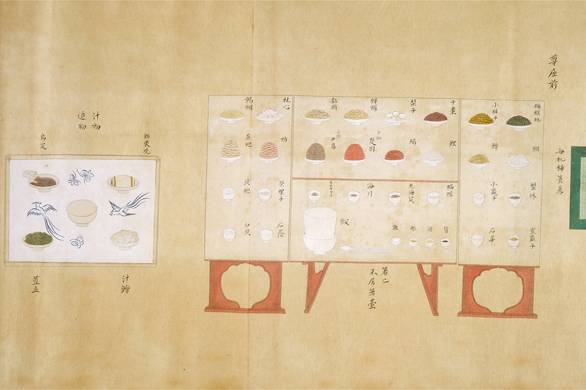
«Исследователь сразу воссоздал по текстам то, что подавали на торжественных пирах при дворе. Но на вкус современного человека это было не так уж хорошо, и в таком виде гости вряд ли остались бы довольны. Поэтому я поправил вкус. Форму подачи и продукты мы по возможности сохранили, а приправы и сами блюда сделали с помощью приёмов киотской кухни. Так получилась творческая хэйанская придворная кухня. Мы начали в 1994 году, к 1200-летию переноса столицы в Хэйан-кё, а сейчас изучение придворной кухни стало делом моей жизни»
Хироюки Хориба, хозяин Rokusei
Обстановка
Комната, освещённая как при свечах
Чтобы правильно выстроить подачу, Хориба много советовался с главой старинного дома «Идзуцу», которому доверяют облачения для периодического обновления святилища Исэ-дзингу. Посуды, которая уже была в рётэе, не хватило, и большую часть чаш из неглазурованной глины каваракэ и лаковой посуды пришлось заказывать. Заново сделали и тяжёлые палочки из чистого серебра, и хэйанскую ложку «кай».
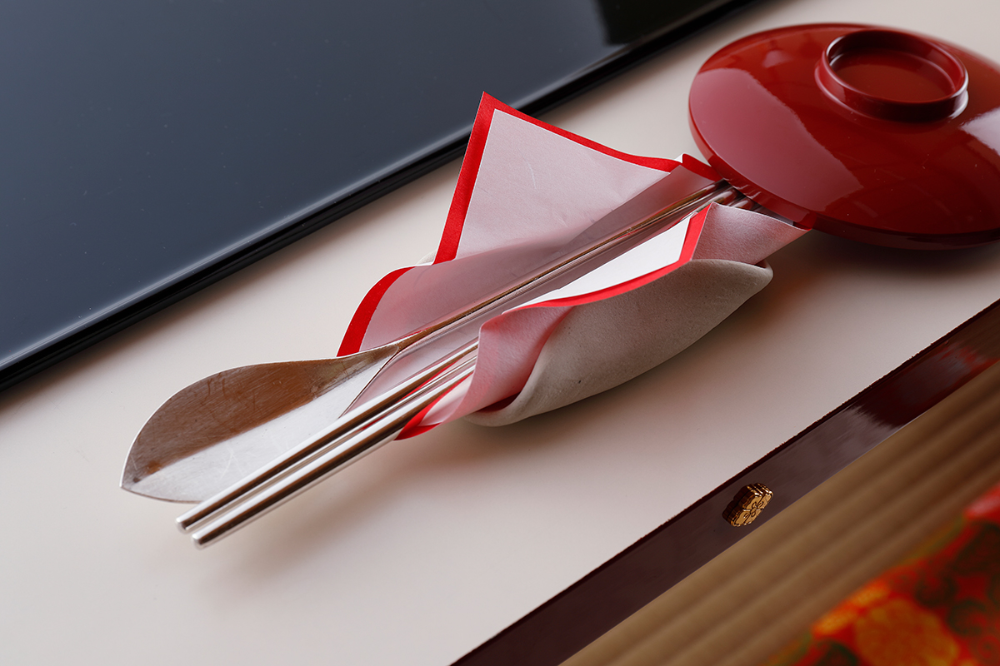
На заказ делали не только посуду и приборы, но и столы, и то, на чём сидят. «Ситонэ», подушка с краями из яркой нарядной ткани, служила сиденьем хэйанским аристократам. Даже место для гостя продумано до мелочей, и от этого мир ужина выглядит убедительно.
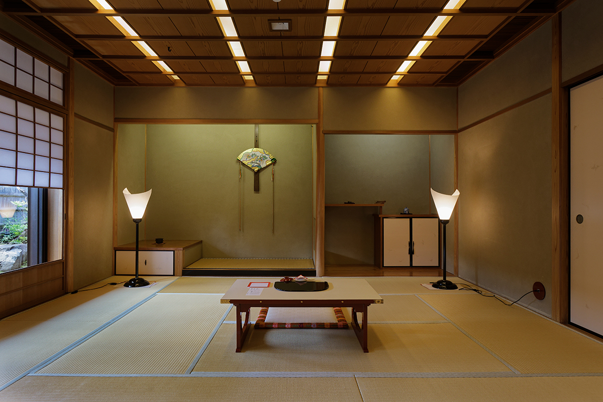
Ужин подают в отдельной комнате, заказывать его нужно не позже чем за неделю. Сначала гостей приглашают в гостиную на первом этаже и дают почитать пояснения о парадной трапезе двора и о блюдах с незнакомыми названиями: «хогайна», «хосидори», «суваяри».
После такой подготовки гости поднимаются в комнату на втором этаже. Чтобы передать полумрак хэйанских покоев, освещённых свечами, свет в коридоре и в комнате приглушён. В нише висит «хиоги», веер из кипарисовых пластин, каким аристократы пользовались каждый день. Рядом курится «нэрико», ароматическая смесь, запах которой напоминает о придворной эпохе.
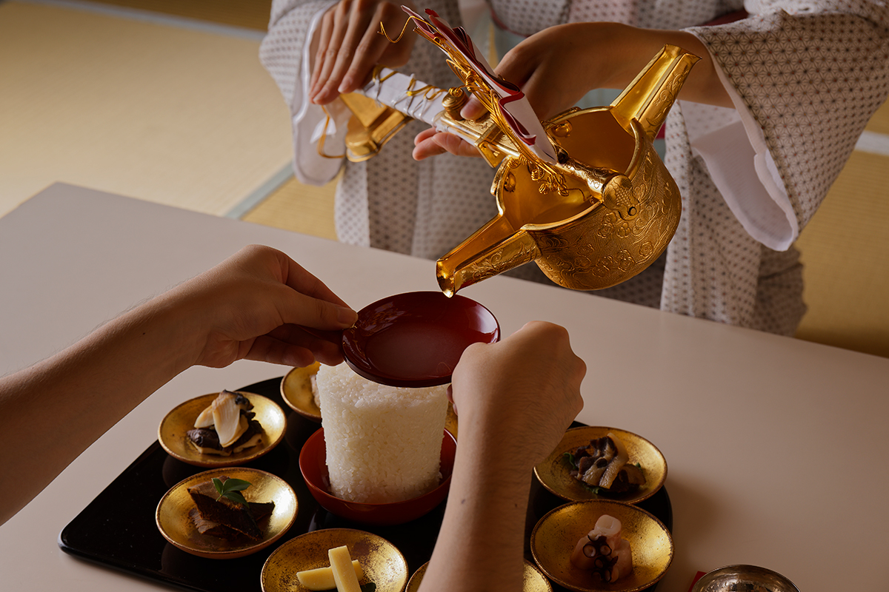
Первая перемена
«Хогайна»: восемь закусок вокруг риса
Как и на пирах знати, ужин открывает чаша сакэ. В это время на столе уже стоит главная, первая перемена «Хогайна», воссозданная по старинным текстам. Посередине подноса «дайбан» стоит «омоно», то есть рис, а вокруг него восемь закусок из постоянного набора.
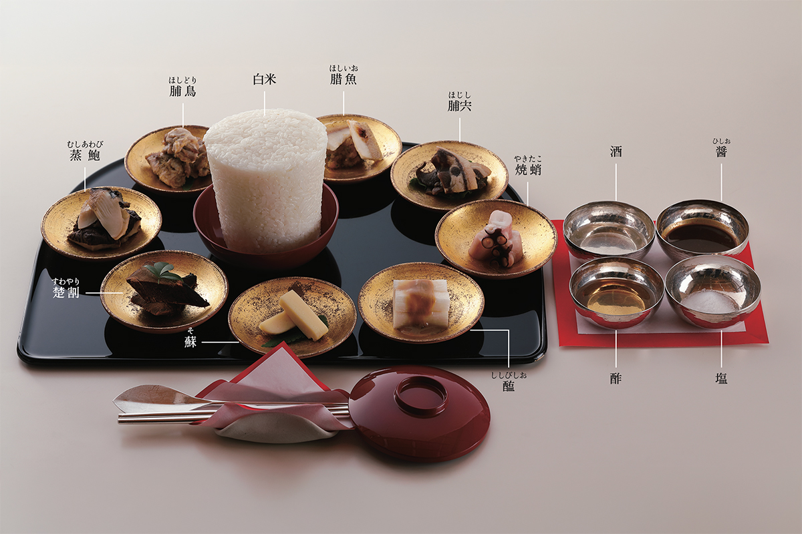
«Со» это древний японский молочный продукт, его делают, уваривая киотское молоко. Паровое морское ушко «муси-аваби» ели так давно, что оно упоминается уже в хэйанском своде законов «Энги-сики». Осьминога «яки-тако» тогда, судя по всему, просто жарили, как и следует из названия. «Хосидори» это блюдо из дичи, и, как в старину, для него берут фазана. «Сисибисио» соответствует современному сиокара, солёной ферментированной закуске. Раньше для неё брали внутренности трепанга «коновата» или морских ежей, в этом ужине выбрали «коновата».
«Ходзиси» изначально готовили из тонко нарезанного мяса кабана или оленя с уксусно-соевой заправкой, а здесь это кабанятина, тушённая в соевом соусе. «Суваяри» это копчёный тунец кацуо. «Хосиио» это нарезанная и высушенная рыба, для неё берут рыбу кису.
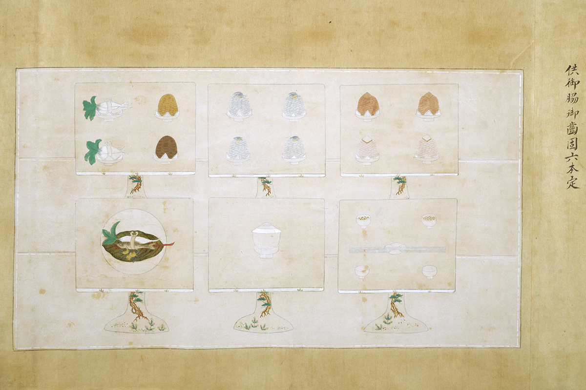
Четыре приправы, уксус, сакэ, соевую пасту и соль, ставят на стол потому, что сложных способов готовки тогда не было. Еду жарили или готовили на пару, и каждый доводил вкус сам.
Все блюда выложены высоко и объёмно, по образцу свода «Руйдзю дзоёсё», где описана хэйанская еда: на рисунках каждое блюдо поднимается примерно на 4 см. Ближе всего к тексту выглядит рис, уложенный цилиндром. Это целых три порции, но доедать не обязательно: и тогда, и сейчас остатки оставлять разрешено.
Дальше
Девять перемен с приёмами киотской кухни
После торжественной первой перемены блюда идут одно за другим, как в обычной киотской трапезе. Некоторых названий, например «ацумоно» или «кассэн», в эпоху Хэйан не было. «Тёсай», блюдо из овощей, вообще придумано в рётэе. Меню выстраивали, думая о равновесии всего ужина и о том, чтобы было вкусно.
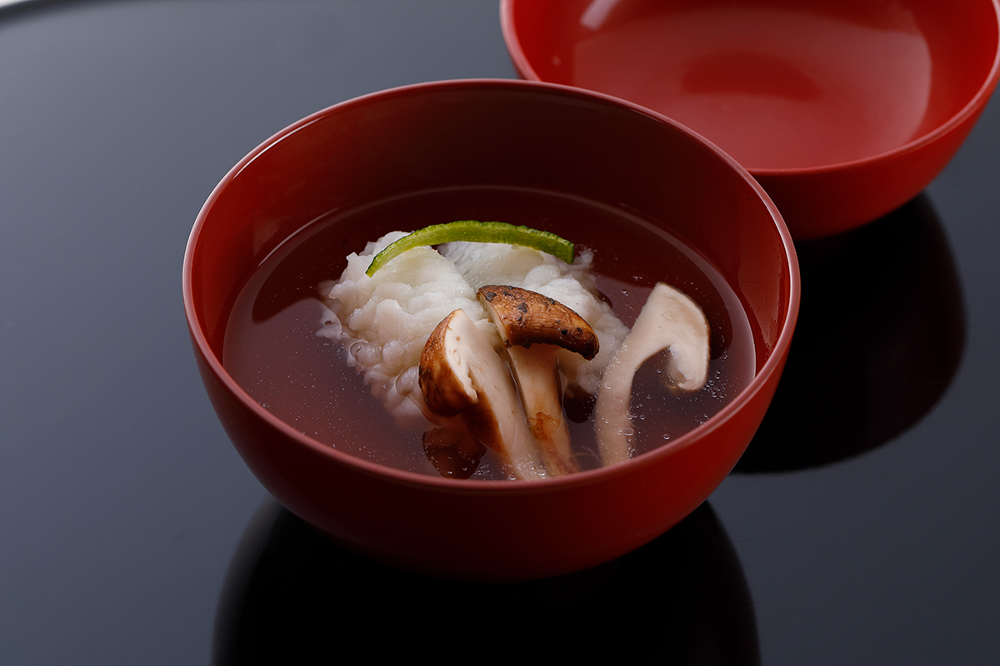
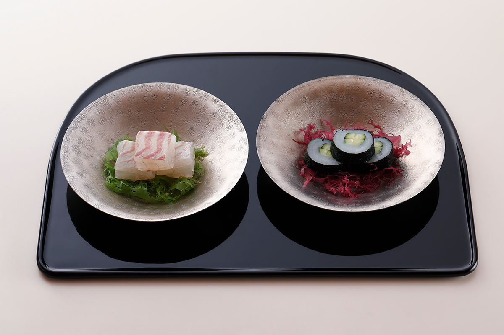
Хэйанская кухня почти не знала ничего, кроме простой жарки без приправ. Мазать еду мисо или готовить её в манере кабаяки стали позже, в эпоху Муромати, тогда же появилось и жареное в масле. Поэтому средние перемены опираются на киотскую кухню.
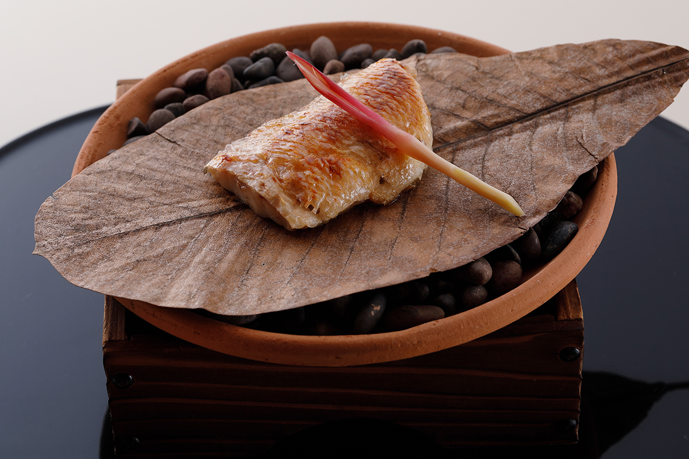
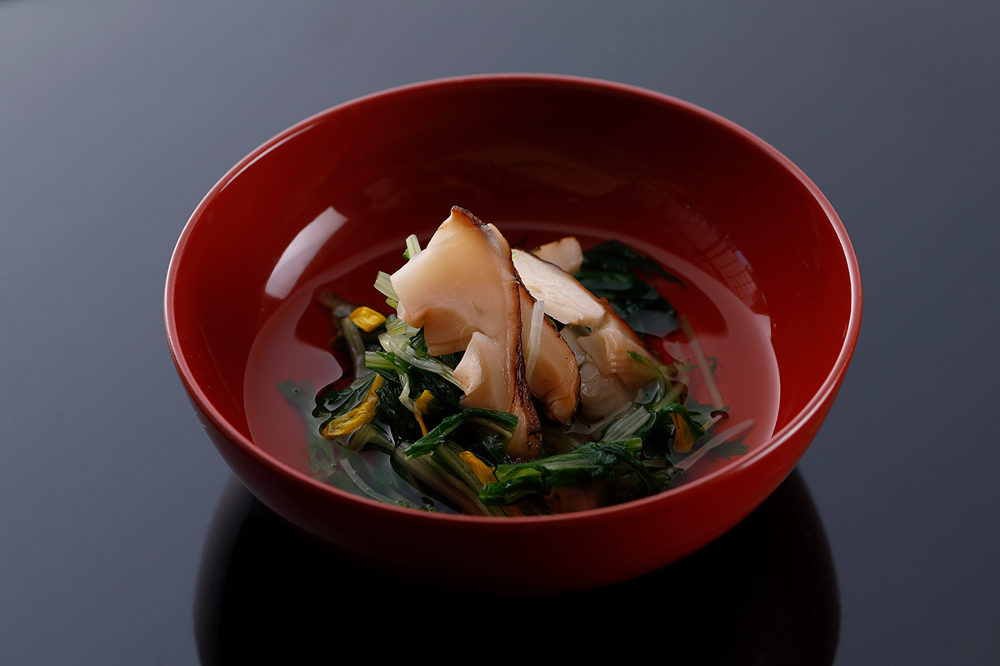
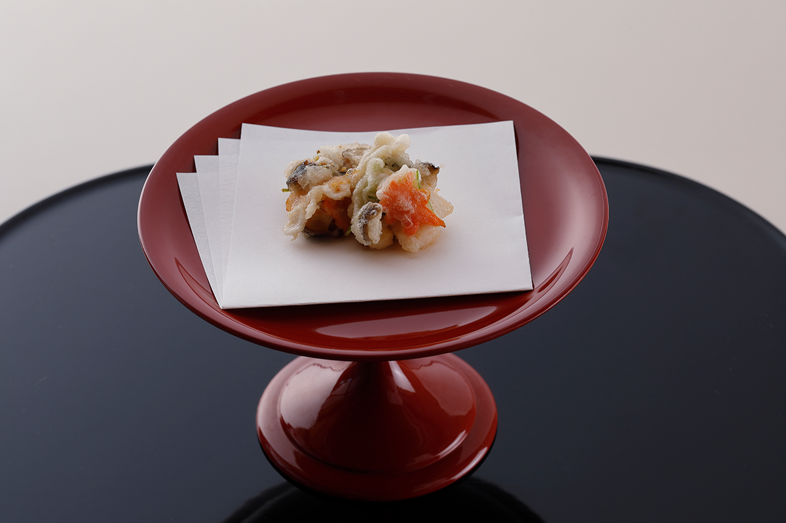
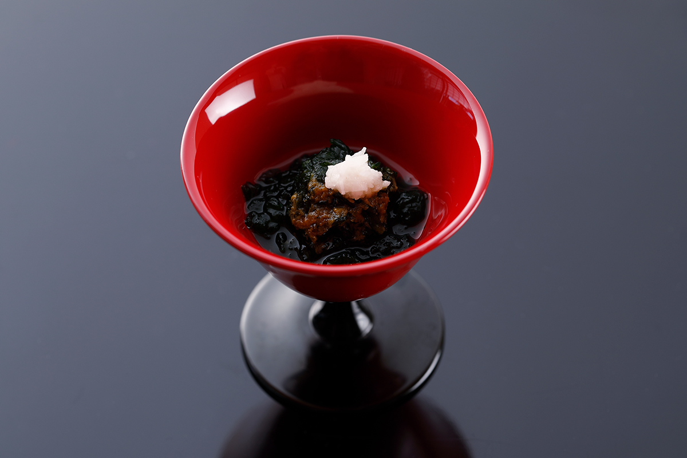
Завершают ужин фрукты и «карагаси», сладости, без которых не обходился ни один пир. С тех пор как хозяин представил свою творческую хэйанскую придворную кухню, прошло 30 лет, а интерес к ней не ослабевает: такого ужина больше нигде не попробуешь.
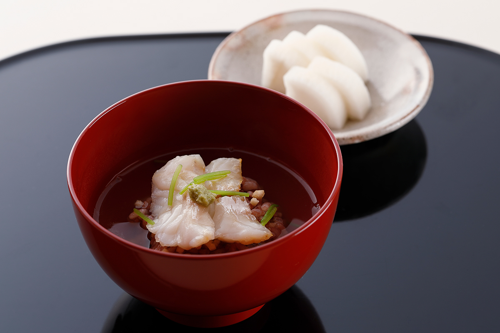
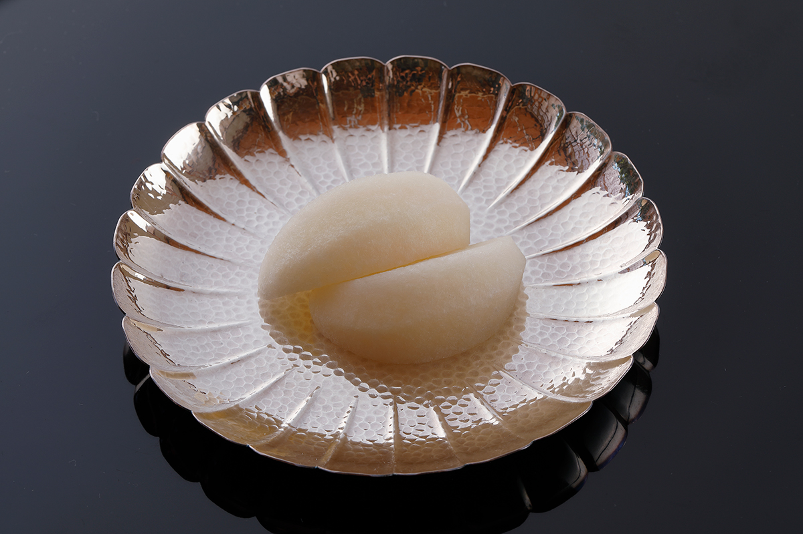
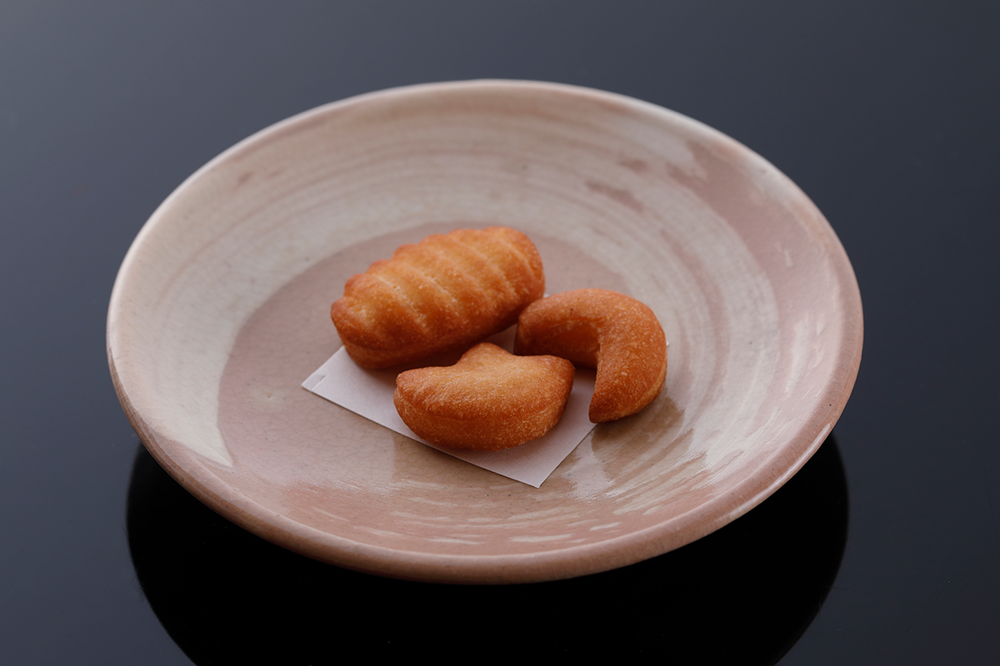
Rokusei
- Адрес
- префектура Киото, Киото, район Сакё, Окадзаки-Ниси-Тэнно-тё, 71
- Телефон
- +81 75-751-6171
- Часы работы
- 11:30–14:00, 17:00–21:00 (последний вход в 18:00)
- Выходные
- понедельник (если это праздник, то следующий день), бывают и другие выходные
- Цены / Вход
- творческая хэйанская придворная кухня подаётся в отдельной комнате, заказ не позже чем за неделю
- Сайт
- rokusei.co.jp
Фото: Тосихико Такэнака.